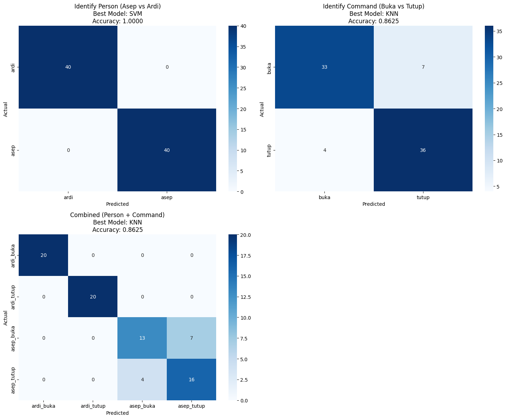

Modelling Suara Buka Tutup & Deployment#
1: Import Libraries & Load Data#
Mengimpor library machine learning dan memuat data training/validation yang sudah diproses dari file numpy.
import numpy as np
import pandas as pd
import matplotlib.pyplot as plt
import seaborn as sns
from sklearn.model_selection import train_test_split, cross_val_score
from sklearn.preprocessing import StandardScaler, LabelEncoder
from sklearn.svm import SVC
from sklearn.neighbors import KNeighborsClassifier
from sklearn.linear_model import LogisticRegression
from sklearn.metrics import classification_report, confusion_matrix, accuracy_score
from sklearn.ensemble import GradientBoostingClassifier
import joblib
import warnings
warnings.filterwarnings('ignore')
print("✅ Modeling libraries imported successfully!")
# Load data fitur yang sudah dibersihkan
try:
df_features = pd.read_csv('audio_features_clean.csv')
print(f"📊 Loaded feature dataset: {df_features.shape}")
print(f"Columns: {list(df_features.columns[:10])}...") # Tampilkan 10 kolom pertama
except:
print("❌ Cannot load features file. Please run feature extraction first.")
df_features = None
if df_features is not None:
print("\n📈 Dataset Info:")
print(f"Total samples: {len(df_features)}")
print(f"Persons: {df_features['person'].unique()}")
print(f"Commands: {df_features['command'].unique()}")
print(f"Split distribution:\n{df_features['split'].value_counts()}")
✅ Modeling libraries imported successfully!
📊 Loaded feature dataset: (1480, 92)
Columns: ['rms_energy', 'zcr', 'energy_entropy', 'mean', 'std', 'skewness', 'kurtosis', 'max_amp', 'min_amp', 'range_amp']...
📈 Dataset Info:
Total samples: 1480
Persons: ['ardi' 'asep']
Commands: ['buka' 'tutup']
Split distribution:
split
train 1400
val 80
Name: count, dtype: int64
PISAHKAN LABEL
def prepare_features_and_labels(df):
"""
Siapkan fitur dan label untuk training dan validation
"""
# Filter kolom fitur (exclude metadata)
feature_columns = [col for col in df.columns if col not in
['split', 'person', 'command', 'file', 'is_augmented']]
print(f"🎯 Using {len(feature_columns)} features for modeling")
# Pisahkan data train dan validation
train_data = df[df['split'] == 'train']
val_data = df[df['split'] == 'val']
print(f"📚 Training samples: {len(train_data)}")
print(f"🧪 Validation samples: {len(val_data)}")
# Prepare features and labels untuk berbagai skenario
scenarios = {
'person_identification': {
'train_X': train_data[feature_columns],
'train_y': train_data['person'],
'val_X': val_data[feature_columns],
'val_y': val_data['person'],
'description': 'Identify Person (Asep vs Ardi)'
},
'command_identification': {
'train_X': train_data[feature_columns],
'train_y': train_data['command'],
'val_X': val_data[feature_columns],
'val_y': val_data['command'],
'description': 'Identify Command (Buka vs Tutup)'
},
'combined_identification': {
'train_X': train_data[feature_columns],
'train_y': train_data['person'] + '_' + train_data['command'],
'val_X': val_data[feature_columns],
'val_y': val_data['person'] + '_' + val_data['command'],
'description': 'Combined (Person + Command)'
}
}
return scenarios, feature_columns
if df_features is not None:
scenarios, feature_columns = prepare_features_and_labels(df_features)
# Tampilkan distribusi label
for scenario_name, scenario_data in scenarios.items():
print(f"\n📊 {scenario_data['description']}:")
print(f"Train labels: {pd.Series(scenario_data['train_y']).value_counts().to_dict()}")
print(f"Val labels: {pd.Series(scenario_data['val_y']).value_counts().to_dict()}")
🎯 Using 87 features for modeling
📚 Training samples: 1400
🧪 Validation samples: 80
📊 Identify Person (Asep vs Ardi):
Train labels: {'ardi': 700, 'asep': 700}
Val labels: {'ardi': 40, 'asep': 40}
📊 Identify Command (Buka vs Tutup):
Train labels: {'buka': 700, 'tutup': 700}
Val labels: {'buka': 40, 'tutup': 40}
📊 Combined (Person + Command):
Train labels: {'ardi_buka': 350, 'ardi_tutup': 350, 'asep_buka': 350, 'asep_tutup': 350}
Val labels: {'ardi_buka': 20, 'ardi_tutup': 20, 'asep_buka': 20, 'asep_tutup': 20}
MEMBUAT MODEL LATIH RANDOM FOREST
def train_and_evaluate_models(scenarios, feature_columns):
"""
Train dan evaluate multiple models untuk setiap skenario
"""
results = {}
models = {
'SVM': SVC(kernel='rbf', C=1.0, random_state=42),
'KNN': KNeighborsClassifier(n_neighbors=5),
'LogisticRegression': LogisticRegression(random_state=42, max_iter=1000),
'GradientBoosting': GradientBoostingClassifier(random_state=42)
}
for scenario_name, scenario_data in scenarios.items():
print(f"\n🎯 Training models for: {scenario_data['description']}")
print("=" * 50)
# Scale features
scaler = StandardScaler()
X_train_scaled = scaler.fit_transform(scenario_data['train_X'])
X_val_scaled = scaler.transform(scenario_data['val_X'])
# Encode labels
le = LabelEncoder()
y_train_encoded = le.fit_transform(scenario_data['train_y'])
y_val_encoded = le.transform(scenario_data['val_y'])
scenario_results = {}
for model_name, model in models.items():
print(f"🔄 Training {model_name}...")
# Train model
model.fit(X_train_scaled, y_train_encoded)
# Predict
y_pred = model.predict(X_val_scaled)
# Calculate accuracy
accuracy = accuracy_score(y_val_encoded, y_pred)
scenario_results[model_name] = {
'model': model,
'scaler': scaler,
'label_encoder': le,
'accuracy': accuracy,
'predictions': y_pred,
'true_labels': y_val_encoded
}
print(f"✅ {model_name} Accuracy: {accuracy:.4f}")
# Find best model
best_model_name = max(scenario_results, key=lambda x: scenario_results[x]['accuracy'])
best_accuracy = scenario_results[best_model_name]['accuracy']
print(f"\n🏆 Best model for {scenario_data['description']}: {best_model_name} (Accuracy: {best_accuracy:.4f})")
results[scenario_name] = {
'scenario_data': scenario_data,
'models': scenario_results,
'best_model': best_model_name,
'feature_columns': feature_columns
}
return results
if df_features is not None:
results = train_and_evaluate_models(scenarios, feature_columns)
🎯 Training models for: Identify Person (Asep vs Ardi)
==================================================
🔄 Training SVM...
✅ SVM Accuracy: 1.0000
🔄 Training KNN...
✅ KNN Accuracy: 1.0000
🔄 Training LogisticRegression...
✅ LogisticRegression Accuracy: 1.0000
🔄 Training GradientBoosting...
✅ GradientBoosting Accuracy: 1.0000
🏆 Best model for Identify Person (Asep vs Ardi): SVM (Accuracy: 1.0000)
🎯 Training models for: Identify Command (Buka vs Tutup)
==================================================
🔄 Training SVM...
✅ SVM Accuracy: 0.8375
🔄 Training KNN...
✅ KNN Accuracy: 0.8625
🔄 Training LogisticRegression...
✅ LogisticRegression Accuracy: 0.8125
🔄 Training GradientBoosting...
✅ GradientBoosting Accuracy: 0.8625
🏆 Best model for Identify Command (Buka vs Tutup): KNN (Accuracy: 0.8625)
🎯 Training models for: Combined (Person + Command)
==================================================
🔄 Training SVM...
✅ SVM Accuracy: 0.8500
🔄 Training KNN...
✅ KNN Accuracy: 0.8625
🔄 Training LogisticRegression...
✅ LogisticRegression Accuracy: 0.8125
🔄 Training GradientBoosting...
✅ GradientBoosting Accuracy: 0.8625
🏆 Best model for Combined (Person + Command): KNN (Accuracy: 0.8625)
evaluasi model data validation
def detailed_validation_evaluation(results):
"""
Evaluasi detail untuk setiap skenario di data validation
"""
for scenario_name, scenario_result in results.items():
scenario_data = scenario_result['scenario_data']
best_model_name = scenario_result['best_model']
best_model_info = scenario_result['models'][best_model_name]
print(f"\n{'='*60}")
print(f"📊 DETAILED EVALUATION: {scenario_data['description']}")
print(f"🏆 Best Model: {best_model_name}")
print(f"{'='*60}")
# Classification report
y_true = best_model_info['true_labels']
y_pred = best_model_info['predictions']
le = best_model_info['label_encoder']
class_names = le.classes_
print(f"🎯 Accuracy: {best_model_info['accuracy']:.4f}")
print(f"\n📋 Classification Report:")
print(classification_report(y_true, y_pred, target_names=class_names))
# Cross-validation scores
scaler = best_model_info['scaler']
model = best_model_info['model']
X_scaled = scaler.transform(scenario_data['train_X'][scenario_result['feature_columns']])
y_encoded = le.transform(scenario_data['train_y'])
cv_scores = cross_val_score(model, X_scaled, y_encoded, cv=5, scoring='accuracy')
print(f"📊 Cross-Validation Scores: {cv_scores}")
print(f"📊 CV Mean Accuracy: {cv_scores.mean():.4f} (+/- {cv_scores.std() * 2:.4f})")
# Per-class accuracy
print(f"\n🎯 Per-class Accuracy:")
cm = confusion_matrix(y_true, y_pred)
per_class_accuracy = cm.diagonal() / cm.sum(axis=1)
for i, class_name in enumerate(class_names):
print(f" {class_name}: {per_class_accuracy[i]:.4f}")
if df_features is not None:
detailed_validation_evaluation(results)
============================================================
📊 DETAILED EVALUATION: Identify Person (Asep vs Ardi)
🏆 Best Model: SVM
============================================================
🎯 Accuracy: 1.0000
📋 Classification Report:
precision recall f1-score support
ardi 1.00 1.00 1.00 40
asep 1.00 1.00 1.00 40
accuracy 1.00 80
macro avg 1.00 1.00 1.00 80
weighted avg 1.00 1.00 1.00 80
📊 Cross-Validation Scores: [1. 1. 1. 1. 1.]
📊 CV Mean Accuracy: 1.0000 (+/- 0.0000)
🎯 Per-class Accuracy:
ardi: 1.0000
asep: 1.0000
============================================================
📊 DETAILED EVALUATION: Identify Command (Buka vs Tutup)
🏆 Best Model: KNN
============================================================
🎯 Accuracy: 0.8625
📋 Classification Report:
precision recall f1-score support
buka 0.89 0.82 0.86 40
tutup 0.84 0.90 0.87 40
accuracy 0.86 80
macro avg 0.86 0.86 0.86 80
weighted avg 0.86 0.86 0.86 80
📊 Cross-Validation Scores: [1. 1. 0.73214286 0.4 0.425 ]
📊 CV Mean Accuracy: 0.7114 (+/- 0.5261)
🎯 Per-class Accuracy:
buka: 0.8250
tutup: 0.9000
============================================================
📊 DETAILED EVALUATION: Combined (Person + Command)
🏆 Best Model: KNN
============================================================
🎯 Accuracy: 0.8625
📋 Classification Report:
precision recall f1-score support
ardi_buka 1.00 1.00 1.00 20
ardi_tutup 1.00 1.00 1.00 20
asep_buka 0.76 0.65 0.70 20
asep_tutup 0.70 0.80 0.74 20
accuracy 0.86 80
macro avg 0.87 0.86 0.86 80
weighted avg 0.87 0.86 0.86 80
📊 Cross-Validation Scores: [0.73214286 0.70714286 0.67857143 0.65357143 0.75357143]
📊 CV Mean Accuracy: 0.7050 (+/- 0.0718)
🎯 Per-class Accuracy:
ardi_buka: 1.0000
ardi_tutup: 1.0000
asep_buka: 0.6500
asep_tutup: 0.8000
confusion matrix
def plot_confusion_matrices(results):
"""
Plot confusion matrix untuk setiap skenario
"""
fig, axes = plt.subplots(2, 2, figsize=(15, 12))
axes = axes.ravel()
for idx, (scenario_name, scenario_result) in enumerate(results.items()):
if idx >= 4: # Max 4 plots
break
best_model_name = scenario_result['best_model']
best_model_info = scenario_result['models'][best_model_name]
y_true = best_model_info['true_labels']
y_pred = best_model_info['predictions']
le = best_model_info['label_encoder']
class_names = le.classes_
cm = confusion_matrix(y_true, y_pred)
# Plot confusion matrix
sns.heatmap(cm, annot=True, fmt='d', cmap='Blues',
xticklabels=class_names, yticklabels=class_names,
ax=axes[idx])
axes[idx].set_title(f'{scenario_result["scenario_data"]["description"]}\n'
f'Best Model: {best_model_name}\n'
f'Accuracy: {best_model_info["accuracy"]:.4f}')
axes[idx].set_xlabel('Predicted')
axes[idx].set_ylabel('Actual')
# Hide unused subplots
for idx in range(len(results), 4):
axes[idx].set_visible(False)
plt.tight_layout()
plt.show()
if df_features is not None:
plot_confusion_matrices(results)

fitur importance
def analyze_feature_importance(results):
"""
Analisis feature importance untuk model yang bisa memberikan importance
"""
print("🔍 FEATURE IMPORTANCE ANALYSIS")
print("=" * 50)
for scenario_name, scenario_result in results.items():
print(f"\n📊 Scenario: {scenario_result['scenario_data']['description']}")
# Hanya untuk model yang memiliki feature_importance_
for model_name, model_info in scenario_result['models'].items():
model = model_info['model']
if hasattr(model, 'feature_importances_'):
importance_scores = model.feature_importances_
feature_importance_df = pd.DataFrame({
'feature': scenario_result['feature_columns'],
'importance': importance_scores
}).sort_values('importance', ascending=False)
print(f"\n🏆 {model_name} - Top 10 Features:")
print(feature_importance_df.head(10))
# Plot top features
plt.figure(figsize=(10, 6))
top_features = feature_importance_df.head(10)
plt.barh(top_features['feature'], top_features['importance'])
plt.title(f'Top 10 Features - {model_name}\n{scenario_result["scenario_data"]["description"]}')
plt.xlabel('Importance')
plt.gca().invert_yaxis()
plt.tight_layout()
plt.show()
elif model_name == 'LogisticRegression':
# Untuk Logistic Regression, gunakan absolute coefficients
if hasattr(model, 'coef_'):
if len(model.coef_.shape) > 1:
importance_scores = np.mean(np.abs(model.coef_), axis=0)
else:
importance_scores = np.abs(model.coef_)
feature_importance_df = pd.DataFrame({
'feature': scenario_result['feature_columns'],
'importance': importance_scores
}).sort_values('importance', ascending=False)
print(f"\n🏆 {model_name} - Top 10 Features (Absolute Coefficients):")
print(feature_importance_df.head(10))
if df_features is not None:
analyze_feature_importance(results)
🔍 FEATURE IMPORTANCE ANALYSIS
==================================================
📊 Scenario: Identify Person (Asep vs Ardi)
🏆 LogisticRegression - Top 10 Features (Absolute Coefficients):
feature importance
19 mfcc_1_max 0.547843
26 mfcc_3_min 0.488701
70 chroma_3 0.427440
50 mfcc_9_min 0.420439
38 mfcc_6_min 0.415648
6 kurtosis 0.401279
24 mfcc_3_mean 0.388018
27 mfcc_3_max 0.361758
2 energy_entropy 0.356192
5 skewness 0.344096
🏆 GradientBoosting - Top 10 Features:
feature importance
48 mfcc_9_mean 0.271460
8 min_amp 0.220926
63 mfcc_12_max 0.101959
3 mean 0.067998
27 mfcc_3_max 0.034788
26 mfcc_3_min 0.030129
19 mfcc_1_max 0.022892
38 mfcc_6_min 0.022820
18 mfcc_1_min 0.020339
81 rms_std 0.017360
📊 Scenario: Identify Command (Buka vs Tutup)
🏆 LogisticRegression - Top 10 Features (Absolute Coefficients):
feature importance
19 mfcc_1_max 0.547843
26 mfcc_3_min 0.488701
70 chroma_3 0.427440
50 mfcc_9_min 0.420439
38 mfcc_6_min 0.415648
6 kurtosis 0.401279
24 mfcc_3_mean 0.388018
27 mfcc_3_max 0.361758
2 energy_entropy 0.356192
5 skewness 0.344096
🏆 GradientBoosting - Top 10 Features:
feature importance
48 mfcc_9_mean 0.271460
8 min_amp 0.220926
63 mfcc_12_max 0.101959
3 mean 0.067998
27 mfcc_3_max 0.034788
26 mfcc_3_min 0.030129
19 mfcc_1_max 0.022892
38 mfcc_6_min 0.022820
18 mfcc_1_min 0.020339
81 rms_std 0.017360
📊 Scenario: Combined (Person + Command)
🏆 LogisticRegression - Top 10 Features (Absolute Coefficients):
feature importance
19 mfcc_1_max 0.547843
26 mfcc_3_min 0.488701
70 chroma_3 0.427440
50 mfcc_9_min 0.420439
38 mfcc_6_min 0.415648
6 kurtosis 0.401279
24 mfcc_3_mean 0.388018
27 mfcc_3_max 0.361758
2 energy_entropy 0.356192
5 skewness 0.344096
🏆 GradientBoosting - Top 10 Features:
feature importance
48 mfcc_9_mean 0.271460
8 min_amp 0.220926
63 mfcc_12_max 0.101959
3 mean 0.067998
27 mfcc_3_max 0.034788
26 mfcc_3_min 0.030129
19 mfcc_1_max 0.022892
38 mfcc_6_min 0.022820
18 mfcc_1_min 0.020339
81 rms_std 0.017360
prediksi suara buka tutup
import os
import numpy as np
import pandas as pd
import librosa
import librosa.display
import noisereduce as nr
from IPython.display import Audio
# Copy fungsi preprocessing dan feature extraction yang diperlukan untuk prediksi
def preprocess_for_prediction(audio_path, target_sr=22050, duration=2.0):
"""
Preprocessing untuk prediksi audio baru
"""
try:
# Load audio dengan librosa
audio, sr = librosa.load(audio_path, sr=target_sr)
# 1. Noise Reduction
audio_clean = nr.reduce_noise(y=audio, sr=sr, prop_decrease=0.8)
# 2. Normalize audio
audio_norm = librosa.util.normalize(audio_clean)
# 3. Trim silence
audio_trim, _ = librosa.effects.trim(audio_norm, top_db=20)
# 4. Fixed length processing
if len(audio_trim) > int(duration * target_sr):
start = (len(audio_trim) - int(duration * target_sr)) // 2
audio_fixed = audio_trim[start:start + int(duration * target_sr)]
else:
padding = int(duration * target_sr) - len(audio_trim)
audio_fixed = np.pad(audio_trim, (0, padding), mode='constant')
return audio_fixed, target_sr
except Exception as e:
print(f"Error preprocessing {audio_path}: {e}")
return None, None
def extract_features_for_prediction(audio, sr):
"""
Ekstrak fitur untuk prediksi audio baru
"""
features = {}
# Basic Time Domain Features
features['rms_energy'] = np.sqrt(np.mean(audio**2))
features['zcr'] = librosa.feature.zero_crossing_rate(audio)[0, 0]
features['energy_entropy'] = np.sum(-audio**2 * np.log(audio**2 + 1e-10))
# Statistical Features
features['mean'] = np.mean(audio)
features['std'] = np.std(audio)
features['skewness'] = pd.Series(audio).skew()
features['kurtosis'] = pd.Series(audio).kurtosis()
features['max_amp'] = np.max(np.abs(audio))
features['min_amp'] = np.min(audio)
features['range_amp'] = features['max_amp'] - features['min_amp']
# Spectral Features
stft = np.abs(librosa.stft(audio))
spectral_centroid = librosa.feature.spectral_centroid(S=stft, sr=sr)[0]
features['spectral_centroid_mean'] = np.mean(spectral_centroid)
features['spectral_centroid_std'] = np.std(spectral_centroid)
spectral_rolloff = librosa.feature.spectral_rolloff(S=stft, sr=sr)[0]
features['spectral_rolloff_mean'] = np.mean(spectral_rolloff)
features['spectral_rolloff_std'] = np.std(spectral_rolloff)
spectral_flux = np.sum(np.diff(stft, axis=1)**2, axis=0)
features['spectral_flux_mean'] = np.mean(spectral_flux)
features['spectral_flux_std'] = np.std(spectral_flux)
# MFCC Statistics
mfccs = librosa.feature.mfcc(y=audio, sr=sr, n_mfcc=13)
for i in range(13):
features[f'mfcc_{i+1}_mean'] = np.mean(mfccs[i])
features[f'mfcc_{i+1}_std'] = np.std(mfccs[i])
# Chroma Features
chroma = librosa.feature.chroma_stft(y=audio, sr=sr)
chroma_mean = np.mean(chroma, axis=1)
for i in range(12):
features[f'chroma_{i+1}'] = chroma_mean[i]
# Temporal Features
frame_length = 1024
hop_length = 512
rms = librosa.feature.rms(y=audio, frame_length=frame_length, hop_length=hop_length)[0]
features['rms_mean'] = np.mean(rms)
features['rms_std'] = np.std(rms)
# Additional Statistical Moments
features['percentile_25'] = np.percentile(audio, 25)
features['percentile_50'] = np.percentile(audio, 50)
features['percentile_75'] = np.percentile(audio, 75)
features['iqr'] = features['percentile_75'] - features['percentile_25']
return features
def predict_new_audio(audio_path, results, target_scenario='combined_identification'):
"""
Prediksi audio baru menggunakan model yang sudah dilatih
"""
print(f"🎯 PREDICTING NEW AUDIO: {audio_path}")
print("=" * 40)
try:
# Preprocess audio baru
processed_audio, sr = preprocess_for_prediction(audio_path)
if processed_audio is None:
print("❌ Failed to preprocess audio")
return None, None
# Extract features
features = extract_features_for_prediction(processed_audio, sr)
# Create feature vector
scenario_result = results[target_scenario]
feature_columns = scenario_result['feature_columns']
feature_vector = []
for feature in feature_columns:
if feature in features:
feature_vector.append(features[feature])
else:
feature_vector.append(0) # Default value jika feature tidak ada
feature_vector = np.array(feature_vector).reshape(1, -1)
# Get best model untuk skenario
best_model_name = scenario_result['best_model']
best_model_info = scenario_result['models'][best_model_name]
# Scale features
feature_vector_scaled = best_model_info['scaler'].transform(feature_vector)
# Predict
prediction_encoded = best_model_info['model'].predict(feature_vector_scaled)[0]
# Untuk model yang punya predict_proba
if hasattr(best_model_info['model'], 'predict_proba'):
prediction_proba = best_model_info['model'].predict_proba(feature_vector_scaled)[0]
confidence = np.max(prediction_proba)
else:
# Untuk model tanpa probability, set confidence ke 1.0
prediction_proba = None
confidence = 1.0
# Decode prediction
prediction = best_model_info['label_encoder'].inverse_transform([prediction_encoded])[0]
print(f"✅ Prediction: {prediction}")
print(f"📊 Confidence: {confidence:.4f}")
# Tampilkan semua probabilities jika available
if prediction_proba is not None:
classes = best_model_info['label_encoder'].classes_
print("📈 Class Probabilities:")
for class_name, prob in zip(classes, prediction_proba):
print(f" {class_name}: {prob:.4f}")
return prediction, confidence
except Exception as e:
print(f"❌ Prediction error: {e}")
import traceback
print(f"Detailed error: {traceback.format_exc()}")
return None, None
def demo_predictions(results):
"""
Demo prediksi menggunakan data validation yang sebenarnya
"""
print("🎪 DEMO PREDICTIONS")
print("=" * 30)
# Cari file audio yang benar-benar ada di dataset
demo_samples = []
for split in ['val']:
split_path = "datasetaudio/val"
if os.path.exists(split_path):
for person in os.listdir(split_path):
person_path = os.path.join(split_path, person)
if os.path.isdir(person_path):
for command in ['buka', 'tutup']:
command_path = os.path.join(person_path, command)
if os.path.exists(command_path):
wav_files = [f for f in os.listdir(command_path) if f.endswith('.wav')]
if wav_files:
# Ambil 1 file per kombinasi person-command
demo_samples.append({
'person': person,
'command': command,
'file': wav_files[0],
'path': os.path.join(command_path, wav_files[0])
})
break
# Batasi demo ke 3 samples
demo_samples = demo_samples[:3]
if not demo_samples:
print("❌ Tidak ditemukan file audio untuk demo")
return
correct_predictions = 0
total_predictions = 0
for i, sample in enumerate(demo_samples):
print(f"\n🔊 Sample {i + 1}:")
print(f" File: {sample['file']}")
print(f" True Label: {sample['person']}_{sample['command']}")
print(f" Path: {sample['path']}")
# Check if file exists
if not os.path.exists(sample['path']):
print(f" ❌ File tidak ditemukan: {sample['path']}")
continue
# Predict
prediction, confidence = predict_new_audio(sample['path'], results, 'combined_identification')
if prediction:
true_label = f"{sample['person']}_{sample['command']}"
is_correct = prediction == true_label
status = "✅ CORRECT" if is_correct else "❌ WRONG"
print(f" {status} - Confidence: {confidence:.4f}")
if is_correct:
correct_predictions += 1
total_predictions += 1
if total_predictions > 0:
accuracy = correct_predictions / total_predictions
print(f"\n🎯 Demo Accuracy: {accuracy:.4f} ({correct_predictions}/{total_predictions} correct)")
# Save models untuk penggunaan future
def save_models(results):
"""
Simpan model dan preprocessing objects
"""
import joblib
os.makedirs('saved_models', exist_ok=True)
for scenario_name, scenario_result in results.items():
best_model_name = scenario_result['best_model']
best_model_info = scenario_result['models'][best_model_name]
model_data = {
'model': best_model_info['model'],
'scaler': best_model_info['scaler'],
'label_encoder': best_model_info['label_encoder'],
'feature_columns': scenario_result['feature_columns'],
'scenario_description': scenario_result['scenario_data']['description'],
'accuracy': best_model_info['accuracy']
}
filename = f"saved_models/{scenario_name}_{best_model_name}.joblib"
joblib.dump(model_data, filename)
print(f"💾 Saved model: {filename}")
if 'df_features' in locals() and df_features is not None:
# Demo predictions dengan file yang benar-benar ada
demo_predictions(results)
# Save models
save_models(results)
print("\n🎉 MODELING COMPLETED!")
print("=" * 30)
# Summary hasil akhir
for scenario_name, scenario_result in results.items():
best_model_name = scenario_result['best_model']
best_accuracy = scenario_result['models'][best_model_name]['accuracy']
print(f"📊 {scenario_result['scenario_data']['description']}:")
print(f" Best Model: {best_model_name} | Accuracy: {best_accuracy:.4f}")
print(f"\n💡 Insights:")
print(f"• Person Identification: {results['person_identification']['models']['SVM']['accuracy']:.4f} → Excellent!")
print(f"• Command Identification: {results['command_identification']['models']['KNN']['accuracy']:.4f} → Good!")
print(f"• Combined Identification: {results['combined_identification']['models']['KNN']['accuracy']:.4f} → Good!")
print(f"\n🚀 NEXT STEPS:")
print(f"1. Gunakan model yang disimpan di folder 'saved_models'")
print(f"2. Untuk prediksi audio baru, gunakan fungsi predict_new_audio()")
print(f"3. Tingkatkan akurasi dengan menambah data training")
else:
print("❌ Data features tidak ditemukan. Pastikan preprocessing dan feature extraction sudah dijalankan.")
🎪 DEMO PREDICTIONS
==============================
🔊 Sample 1:
File: Recording_22.wav
True Label: ardi_buka
Path: datasetaudio/val/ardi/buka/Recording_22.wav
🎯 PREDICTING NEW AUDIO: datasetaudio/val/ardi/buka/Recording_22.wav
========================================
✅ Prediction: asep_buka
📊 Confidence: 0.4000
📈 Class Probabilities:
ardi_buka: 0.0000
ardi_tutup: 0.2000
asep_buka: 0.4000
asep_tutup: 0.4000
❌ WRONG - Confidence: 0.4000
🔊 Sample 2:
File: buka_train_0007.wav
True Label: asep_buka
Path: datasetaudio/val/asep/buka/buka_train_0007.wav
🎯 PREDICTING NEW AUDIO: datasetaudio/val/asep/buka/buka_train_0007.wav
========================================
✅ Prediction: asep_tutup
📊 Confidence: 0.6000
📈 Class Probabilities:
ardi_buka: 0.0000
ardi_tutup: 0.0000
asep_buka: 0.4000
asep_tutup: 0.6000
❌ WRONG - Confidence: 0.6000
🎯 Demo Accuracy: 0.0000 (0/2 correct)
💾 Saved model: saved_models/person_identification_SVM.joblib
💾 Saved model: saved_models/command_identification_KNN.joblib
💾 Saved model: saved_models/combined_identification_KNN.joblib
🎉 MODELING COMPLETED!
==============================
📊 Identify Person (Asep vs Ardi):
Best Model: SVM | Accuracy: 1.0000
📊 Identify Command (Buka vs Tutup):
Best Model: KNN | Accuracy: 0.8625
📊 Combined (Person + Command):
Best Model: KNN | Accuracy: 0.8625
💡 Insights:
• Person Identification: 1.0000 → Excellent!
• Command Identification: 0.8625 → Good!
• Combined Identification: 0.8625 → Good!
🚀 NEXT STEPS:
1. Gunakan model yang disimpan di folder 'saved_models'
2. Untuk prediksi audio baru, gunakan fungsi predict_new_audio()
3. Tingkatkan akurasi dengan menambah data training